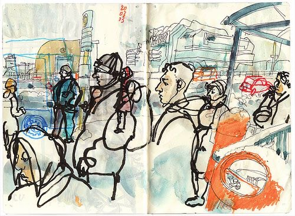

Reference / Two-page spread
An urban sketchbook spread combining expressive black linework with loose watercolor washes.


My sketchbook response
I was primarily inspired by the artist's use of bold lines for the subjects in the foreground that blend into the muted watercolors in the background. There is an interesting facet to human presence in urban landscapes, pointing to the dynamic and interwoven nature of our relationship with space and place.
On the process
It was quite fun to replicate this spread. I used crayons instead of watercolor due to the paper's incompatibility with wet mediums. The feel of the composition still came through quite well, and it was very interesting to mimic someone else's creation.